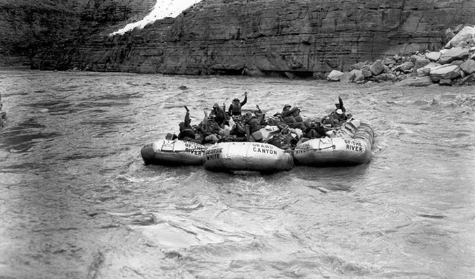

Welcome the Summer in with a
SPLASH!
Click HERE for FUN Splash Activities!!
Where did Whitewater Rafting come from?
1950's - WWII Ten Man Rafts
World War II produced a surplus of the vulcanized rubber pontoons, both as actual “ten man rafts” or large oval and tubular bridge pontoons. Once the war ended, river runners took to the river again, and brought with them the army surplus “ten-mans” as they were nick-named. Georgie White Clark was one of these who took to the river after the war. Georgie’s first introduction to the river and Grand Canyon was actually without raft! In 1945, she and fellow adventurer Harry Aeleson swam from Diamond Creek to Lake Mead! Later they shared several river and hiking adventures together with the readily available rubber rafts. The rubber raft marked the beginning of the fade out of wooden boats on rivers. Georgie would later invent her own monstrous pontoon rafts (and techniques) that forever altered river rafting.
What does it look like
today?
Salmon River
425 miles long, this “Wild and Scenic” gem is one of the largest rivers in North America. As such, it’s carved out one of the country’s deepest canyons (7,000 feet, beating out the Grand Canyon’s 6,093-foot depth). With its mountain terrain and canyons, the Salmon River is surrounded by some of the most rocky and remote landscapes tackled by white water rafting trips. River-runners will be delighted by its wildlife, rich green pools, heart-pounding rapids, and tranquil floats —all punctuated by white sand beaches— as they embark on any length of rafting excursion.
Grab an extra 20% discount on your first trip!
Subscribe to the monthly newsletter. Get the latest updates and special offers delivered right to your inbox.